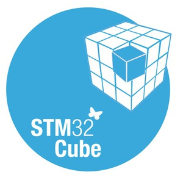

Présentation
Cette mission portait sur une solution RFID et radio autonome destinée à simplifier des observations terrain pour une équipe de recherche. Les équipements devaient fonctionner sur batterie, avec des contraintes fortes de consommation et de redémarrage fiable. J'ai travaillé sur la prise en main d'un microcontrôleur STM32 basse consommation, l'étude de ses modes de sommeil, la mise en place d'une procédure de debug par UART et l'analyse de comportements observés après redémarrage ou réveil.
Membres
- Travail seul pour les recherches
- Intervention terrain avec les clients pendant une semaine
- Travail en équipe de RETEX
Compétences techniques

STM32Cube UART
UART
Compétences transversales
- Observation terrain et retour utilisateur
- Rédaction d'un rapport d'intervention
- Analyse collective en RETEX
Difficultés et réussites
Le projet combinait debug embarqué, contraintes énergétiques et observation réelle sur le terrain. J'ai pu proposer des corrections, établir des cas de test répétables et produire un compte rendu reliant les observations techniques aux retours utilisateurs.
Timeline du projet
-
18/06/2026 - 24/06/2026
Terrain
- Vérification d'équipements déployés
- Analyse des défaillances possibles
- Compte rendu et propositions d'amélioration
-
07/2026
Debug embarqué
- Prise en main du microcontrôleur
- Debug UART
- Tests de redémarrage et de modes sommeil